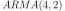

ARMAState¶
-
class
ARMAState(*args)¶ Last state recorded of an ARMA process.
- Parameters
Examples
Define a state of an  process of dimension 1:
>>> import openturns as ot >>> myLastValues = ot.Sample([[0.6], [0.7], [0.3], [0.2]]) >>> myLastNoiseValues = ot.Sample([[1.2], [1.8]]) >>> myARMAState = ot.ARMAState(myLastValues, myLastNoiseValues)
- Attributes
thisownThe membership flag
Methods
Accessor to the object’s name.
Accessor to the dimension of coefficients in the list.
Accessor to the last values of the noise defining the ARMA process.
getId()Accessor to the object’s id.
getName()Accessor to the object’s name.
Accessor to the object’s shadowed id.
Accessor to the object’s visibility state.
getX()Accessor to the last values of the ARMA process.
hasName()Test if the object is named.
Test if the object has a distinguishable name.
setName(name)Accessor to the object’s name.
setShadowedId(id)Accessor to the object’s shadowed id.
setVisibility(visible)Accessor to the object’s visibility state.
setXEpsilon(x, epsilon)Accessor to the last values of the noise defining the ARMA process.
-
getClassName()¶ Accessor to the object’s name.
- Returns
- class_namestr
The object class name (object.__class__.__name__).
-
getDimension()¶ Accessor to the dimension of coefficients in the list.
- Returns
- dimensionint
The dimension
 of the ARMA process.
of the ARMA process.
-
getEpsilon()¶ Accessor to the last values of the noise defining the ARMA process.
- Returns
- noises
Sampleof size and dimension
and dimension Last
values of the white noise of the  process of dimension .
process of dimension .
- noises
-
getId()¶ Accessor to the object’s id.
- Returns
- idint
Internal unique identifier.
-
getName()¶ Accessor to the object’s name.
- Returns
- namestr
The name of the object.
-
getShadowedId()¶ Accessor to the object’s shadowed id.
- Returns
- idint
Internal unique identifier.
-
getVisibility()¶ Accessor to the object’s visibility state.
- Returns
- visiblebool
Visibility flag.
-
getX()¶ Accessor to the last values of the ARMA process.
- Returns
- values
Sampleof size and dimension
and dimension Last
values of the process of dimension .
- values
-
hasName()¶ Test if the object is named.
- Returns
- hasNamebool
True if the name is not empty.
-
hasVisibleName()¶ Test if the object has a distinguishable name.
- Returns
- hasVisibleNamebool
True if the name is not empty and not the default one.
-
setName(name)¶ Accessor to the object’s name.
- Parameters
- namestr
The name of the object.
-
setShadowedId(id)¶ Accessor to the object’s shadowed id.
- Parameters
- idint
Internal unique identifier.
-
setVisibility(visible)¶ Accessor to the object’s visibility state.
- Parameters
- visiblebool
Visibility flag.